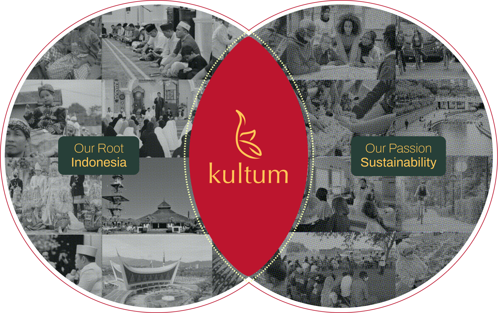

Kultum was born from lived contrast. Between Indonesia and UK, between informal gathering and formal infrastructure, between neighbourhood intimacy and urban anonymity.
Our co-founders come from diverse Indonesian backgrounds - Minangkabau, Palembangese, Sundanese, Javanese, and Madura - where travels and movement, communal living, shared food, and faith shape everyday life. These traditions emphasise collective responsibility, environmental stewardship, and intergenerational connection.
Moving between contexts revealed something important: towns and cities and not only built through policy and infrastructure - they are built through culture, community, and collaboration. In Indonesia, informal walking routes, neighbourhood pengajian, and collective collaborations that shape pasar embed social life into space. In London, planning systems, transport networks, and pedestrian design structure everyday movement differently.

Kultum emerged to bridge these worlds.
Today, we work at the intersection of Indonesian cultural heritage and contemporary sustainability practice. We explore how walking, play, cooking, gathering, and dialogue can shape safer streets, healthier mobility, lower waste homes, and more inclusive urban environments.
Our work connects grass-roots insight with planning expertise - ensuring that lived experience informs conversations about active travel, public spaces, homes, and climate responsibility.
Kultum is not simply about preserving tradition. It is about translating cultural values into spatial practice.

Rooted in Indonesian and diasporic traditions of movement, communal care, and gathering, our work recognises that how people travel, inhabit space, and celebrate is shaped by memory and belonging.
We centre these lived experiences in conversations around sustainability, including active travel, co-design, and upcycling.
Culture for us is not symbolic - it is infrastructural. It shapes how towns and cities feel, function, and evolve.

We design with communities, not for them.
Through walking, play, dialogue, and co-design, we create spaces where people can reflect on how they experience their neighbourhoods. We prioritise intergenerational voices and those often excluded from planning processes.
Our aim is to strengthen trust, participation, and shared responsibility - ensuring that change is inclusive, grounded, and collectively shaped.

We believe meaningful change is relational.
Kultum works across community groups, educators, designers, and institutions to connect lived experience with professional practice. By bridging grass-roots insight with strategic thinking, we support safer, lower-waste, and more equitable environments for all.
Collaboration, for us, is long-term and mutual - built on shared learning and collective accountability.